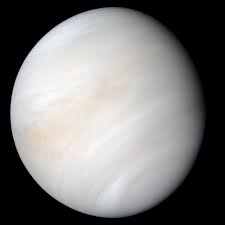
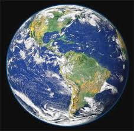
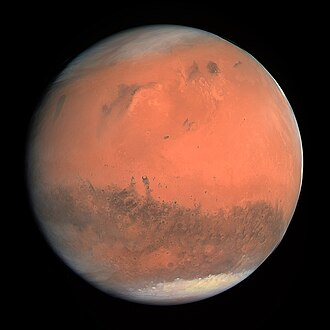
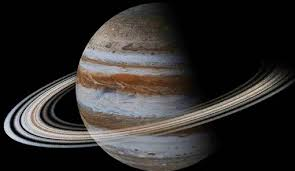
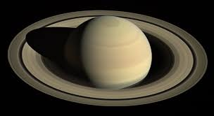
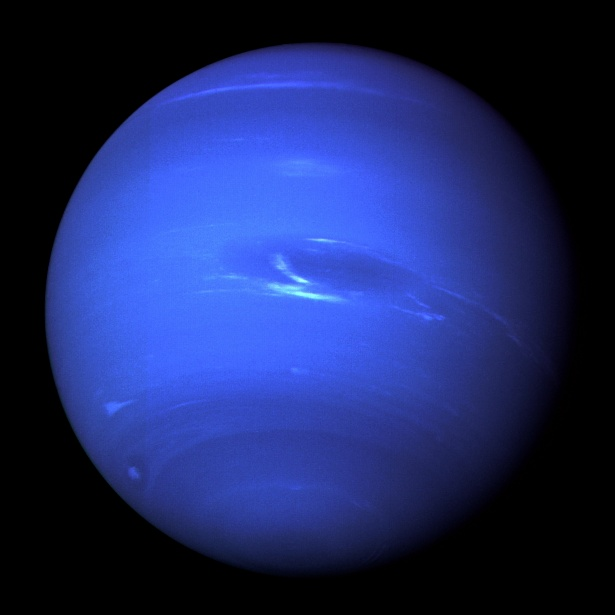

О космосе
Солнечная система — это планетная система, в центре которой находится звезда — Солнце. Вокруг Солнца обращаются восемь планет, а также их спутники, карликовые планеты, астероиды и кометы. Солнечная система сформировалась около 4,6 миллиарда лет назад из облака газа и пыли. Солнце содержит 99,86% всей массы системы.
Планеты

Меркурий
Меркурий — ближайшая к Солнцу планета. Это маленькая каменистая планета без атмосферы. Из-за отсутствия атмосферы температура на поверхности колеблется от −180°C ночью до +430°C днём. Год на Меркурии длится всего 88 земных суток.

Венера
Венера — вторая планета от Солнца и самая горячая в Солнечной системе. Температура поверхности достигает +465°C из-за сильного парникового эффекта. Атмосфера Венеры состоит в основном из углекислого газа. На Венере Солнце восходит на западе, потому что она вращается в обратном направлении.

Земля
Земля — третья планета от Солнца и единственная известная нам планета, на которой есть жизнь. 71% поверхности Земли покрыт водой. У Земли есть один спутник — Луна. Земля имеет магнитное поле, которое защищает её от солнечного ветра.

Марс
Марс — четвёртая планета от Солнца, известная как «красная планета» из-за цвета поверхности. На Марсе находится самый высокий вулкан в Солнечной системе — гора Олимп высотой 21 км. Учёные изучают Марс как возможное место для колонизации в будущем.

Юпитер
Юпитер — крупнейшая планета Солнечной системы. Это газовый гигант, состоящий в основном из водорода и гелия. Знаменитое Большое Красное Пятно — это гигантский шторм, бушующий уже более 350 лет. У Юпитера более 90 спутников.

Сатурн
Сатурн — шестая планета от Солнца, знаменитая своими красивыми кольцами. Кольца состоят из кусков льда и камня разного размера. Сатурн настолько лёгкий, что если бы существовал достаточно большой океан, он мог бы плавать в воде.

Уран
Уран — седьмая планета от Солнца. Его особенность в том, что он вращается «лёжа на боку» — ось наклонена под углом 97°. Уран является ледяным гигантом. Температура в его атмосфере опускается до −224°C.

Нептун
Нептун — самая далёкая планета Солнечной системы. Один оборот вокруг Солнца занимает 165 земных лет. Нептун — самая ветреная планета: скорость ветра достигает 2100 км/ч. Нептун был открыт в 1846 году, его положение вычислили математически ещё до наблюдения.